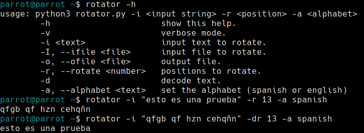

Rotator
23 marzo 2021
Rotator es una herramienta sencilla para el cifrado y descifrado clásico de rotación. La motivación para desarrollar esta herramienta surgió gracias que varios CTF tenían textos cifrados en César y ROT13 que había que descifrar.
La herramienta está desarrollada en Python3 y publicada en Github para que pueda ser fácilmente descargable por cualquier usuario. Su uso se explica con el siguiente ejemplo:

El código de la herramienta es el siguiente:
#!/usr/bin/python3
import sys, getopt
spanish_alphabet_lower_case = "abcdefghijklmnñopqrstuvwxyz"
english_alphabet_lower_case = "abcdefghijklmnopqrstuvwxyz"
verbose = False
help = "\t-h\t\t\tshow this help.\n\t-v\t\t\tverbose mode.\n\t-i <text>\t\tinput text to rotate.\n\t-I, --ifile <file>\tinput file to rotate.\n\t-o, --ofile <file>\toutput file.\n\t-r, --rotate <number>\tpositions to rotate.\n\t-d\t\t\tdecode text.\n\t-a, --alphabet <text>\tset the alphabet (spanish or english)"
usage = "usage: python3 rotator.py -i <input string> -r <position> -a <alphabet>"
help_options = "Option not recognised. Use -h to see help."
help_arguments = "Bad arguments. Use -h to see help."
def rotateChar(character, position, alphabet, decode=False):
if decode == True:
alphabet = alphabet[::-1]
if not character in ("\n", "\r", "\0", "\t"):
#check if character is uppercase, then convert it to lower.
isUpperCase = character.isupper()
if isUpperCase:
character = character.lower()
initial_pos = alphabet.find(character)
if initial_pos != -1:
alphabet += alphabet
final_pos = initial_pos + int(position)
character = alphabet[final_pos]
if verbose:
print ("initial pos = " + str(initial_pos))
print ("final pos = " + str(final_pos))
print(character + "->" + alphabet[final_pos])
print("is upper case: " + str(isUpperCase))
#if the character was uppercase convert it to upper again
if isUpperCase:
character = character.upper()
return character
def main(argv):
global verbose
input = ""
inputfile = ""
outputfile = ""
alphabet = ""
rotate = 0
decode = False
try:
opts, args = getopt.getopt(argv,"hi:I:o:a:r:dv",["ifile=","ofile=", "alphabet=","rotate=","decode="])
except getopt.GetoptError:
print(help_options)
sys.exit(2)
for opt, arg in opts:
if opt == '-h':
print (usage)
print(help)
sys.exit()
elif opt in ("-i"):
input = arg
elif opt in ("-I", "--ifile"):
inputfile = arg
elif opt in ("-o", "--ofile"):
outputfile = arg
elif opt in ("-a", "--alphabet"):
if arg == 'english':
alphabet = english_alphabet_lower_case
elif arg == 'spanish':
alphabet = spanish_alphabet_lower_case
elif opt in ("-r", "--rotate"):
rotate = arg
elif opt in ("-d", "--decode"):
decode = True
elif opt in ("-v"):
verbose = True
if rotate == 0 or len(input) != 0 and len(inputfile) != 0:
print(help_arguments)
sys.exit(1)
if len(input) != 0:
string_to_rotate = input
else:
string_to_rotate = open(inputfile, 'r').read()
if len(alphabet) == 0 or len(string_to_rotate) == 0:
print(help_arguments)
sys.exit(1)
rotate_string = ""
for character in string_to_rotate:
rotate_string += rotateChar(character, rotate, alphabet, decode)
if len(outputfile) == 0:
print (rotate_string)
else:
try:
f = open(outputfile, 'w')
f.write(rotate_string)
f.close()
except Exception as e:
print(e)
if __name__ == '__main__':
main(sys.argv[1:])